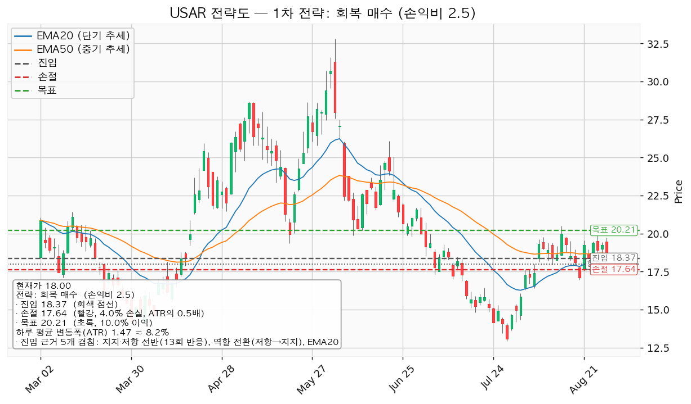
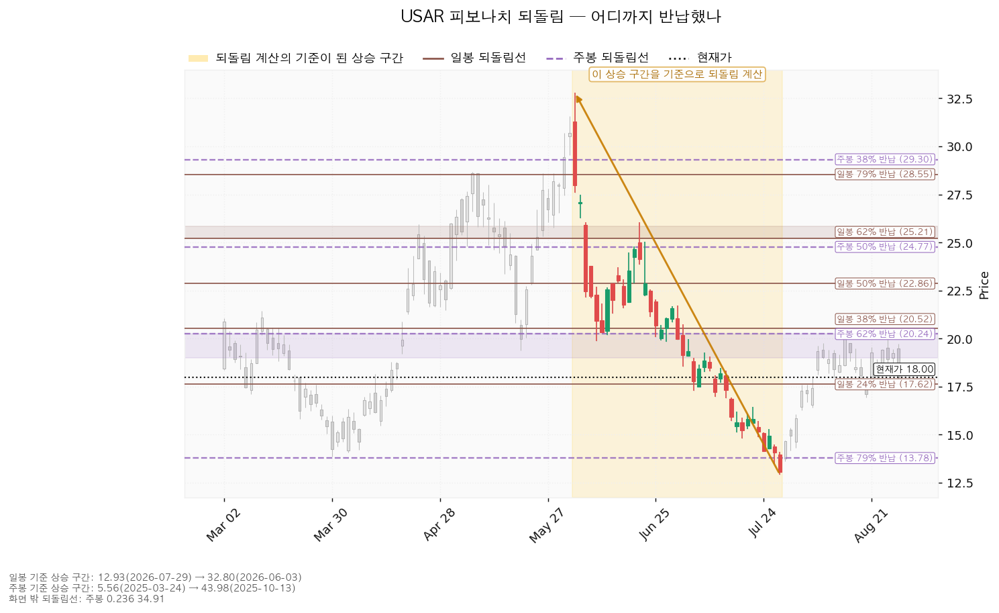
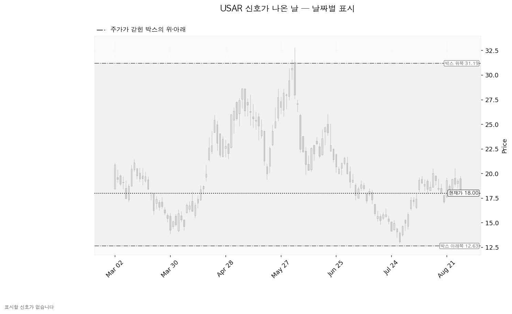
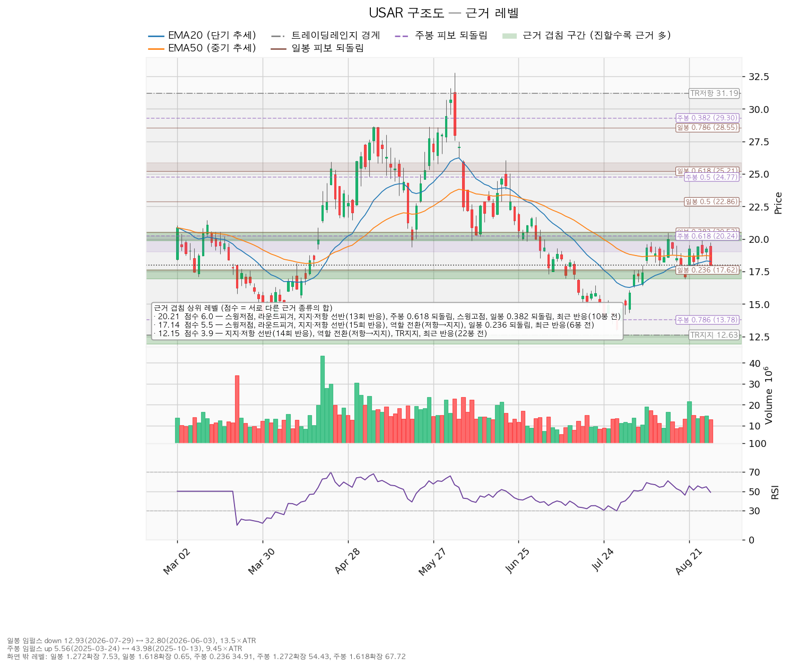

USA Rare Earth(USAR)는 미국 텍사스 라운드탑 광산의 희토류 자원 개발과 오클라호마 공장의 네오디뮴 영구자석 생산을 함께 추진하는 기업입니다.
| 구분 | 가격 | 판정 방식 | 현재 상태 |
|---|---|---|---|
| 폐기선 (시나리오가 틀렸다고 볼 선) | 12.63달러 | 이탈 후 3거래일 내 일봉 종가 회복 실패 + 반등에서 저항으로 확인 | 유지 중 (현재가 대비 -29.8%) |
| 회복선 (롱 전환의 최소 조건) | 18.37달러 | 일봉 종가로 회복한 뒤 되돌림에서 지지되는지 | 회복 대기 (현재가 대비 +2.07%) |
| 확인선 (상승 전환 확정) | 31.19달러 | 일봉 종가 돌파 후 되돌림 지지 확인 | 미돌파 (현재가 대비 +73.3%) |
직전 리포트의 진입 조건은 "18.82달러를 일봉 종가로 회복한 뒤 되돌림에서 지켜지는 것을 확인" 이었습니다. 단순 종가 회복만으로는 부족하다고 명시했으므로, 그 기준 그대로 8/24 이후 일봉을 하나씩 대조했습니다.
| 날짜 | 시가 | 고가 | 저가 | 종가 | 18.82달러 판정 |
|---|---|---|---|---|---|
| 08-24 | 18.71 | 18.94 | 17.68 | 18.29 | 종가 미회복 |
| 08-25 | 18.48 | 19.47 | 17.97 | 19.41 | 종가 회복 (1차 조건 충족) |
| 08-26 | 19.52 | 20.52 | 18.69 | 18.92 | 장중 18.69까지 되밀렸으나 종가는 위 — 되돌림 지지 확인 (2차 조건 충족) |
| 08-27 | 19.00 | 19.44 | 18.46 | 19.25 | 종가 유지 |
| 08-28 | 19.47 | 19.74 | 17.81 | 18.00 | 종가 이탈 |
위에서 마감 → 충족. 조건이 완성된 시점은 8/26 종가입니다.
1차 목표 19.75달러에 0.015달러 못 미쳤고, 8/28 저가 17.81달러가 집행 손절 18.10달러를 통과했습니다. → 조건 충족 후 결과는 손절 체결. 이 매매는 졌습니다.
직전 리포트는 현재가를 17.83달러로 적었습니다. 그러나 발행 시각은 2026-08-24 23:37(한국시각), 즉 미국 현지 8월 24일 오전 10시 37분 장중이었고, 8/24 일봉의 실제 종가는 18.29달러 (그날 범위 17.68~18.94달러)였습니다. 17.83달러는 그 범위 안의 장중 미확정 체결가였습니다.
즉 직전 리포트의 이동평균·하루 평균 변동폭·근거 겹침 레벨은 모두 확정되지 않은 마지막 봉 위에서 계산된 값입니다. 실제로 직전 리포트의 EMA20은 17.96달러였으나 확정 종가가 반영된 지금은 18.28달러이고, 회복선의 근거였던 EMA50도 18.64달러에서 18.70달러로 달라졌습니다. 지지 테스트 거래량 비교(2025-12-31 테스트가 평균의 0.76배 → 0.85배)도 함께 바뀌었습니다. 당시 제시한 18.82달러 회복선 자체는 이 오차 위에서 산출된 값이었음을 밝히고 정정합니다.
| 항목 | 2026-08-24 | 2026-08-31 | 왜 움직였나 |
|---|---|---|---|
| 폐기선 | 12.63달러 | 12.63달러 (동일) | 박스 하단 변동 없음 |
| 회복선 | 18.82달러 | 18.37달러 (-0.45) | 근거가 바뀌었습니다. 직전에는 EMA50 + 19달러 라운드피겨(겹침 2.1점)였으나, 8/25~8/28에 18.26달러대에서 반복 반응이 쌓이며 13회 반응한 지지·저항 선반(과거 저항이 지지로 역할이 바뀐 자리)이 형성됐고 여기에 EMA20(18.28)·EMA50(18.70)이 함께 들어와 겹침 3.7점으로 강화됐습니다 |
| 확인선 | 31.19달러 | 31.19달러 (동일) | 박스 상단 변동 없음 |
| 대표 셋업 진입 | 18.82달러 | 18.37달러 | 위와 같은 이유 |
| 손절 | 18.10달러 | 17.64달러 | 진입선이 내려온 만큼 동반 하향(둘 다 진입선의 0.5배 변동폭 아래) |
| 목표 | 20.38달러 | 20.21달러 | 목표 구간의 겹침 근거가 5.4점 → 6.0점(전체 1위)으로 늘며 중심값이 소폭 하향 |
| 손익비 | 1 : 2.16 | 1 : 2.50 | 진입~목표 거리가 손절 폭 대비 넓어짐 |
| 추격 판단 | 추격 표시 없음 | 현재가 추격 비권장 | 진입선 18.37달러가 현재가 18.00달러에서 +2.07%(하루 변동폭의 0.25배)로 매우 가까워져, 확인 전 선취 매수의 위험이 커졌습니다 |
결론의 방향은 직전과 같습니다: 신규 매수 보류, 회복선 종가 회복 + 되돌림 지지 확인 후에만 롱 전환. 다만 두 가지가 나빠졌습니다. 첫째, 직전 진입 조건이 충족됐는데도 손절로 끝났다는 실증이 생겼습니다. 둘째, 아래 컨센서스 항목에서 보듯 90일간 이익 추정치가 함께 내려왔으므로 가격 하락을 단순한 밸류에이션 축소로만 볼 수 없게 됐습니다. 직전 리포트는 이 점을 다루지 않았습니다.
| 항목 | 값 | 의미 |
|---|---|---|
| 현재가 | 18.00달러 | 아래 데이터 상태 항목의 주의사항을 함께 보십시오 |
| EMA20 (최근 20일 평균 흐름) | 18.28달러 | 현재가가 바로 아래 |
| EMA50 (최근 50일 평균 흐름) | 18.70달러 | 중기 흐름선 아래 — 반등 미완 |
| RSI(14) (과열·침체 온도계, 50이 중립) | 48.90 | 중립 — 방향성 없음 |
| ATR (하루 평균 변동폭) | 1.4724달러 (현재가의 8.18%) | 하루에 8% 넘게 흔들리는 종목 |
| 추세 / 국면 | 하락 / 횡보 레인지 | "구조 유지 — 하단 사수 조건부" |
| 전고 / 전저 | 20.50달러 / 16.95달러 | 8/14 고점, 8/20 저점 |
조회된 일봉 753개 중 40봉·90봉·180봉 세 창을 모두 시험했습니다.
| 시험한 창 | 박스 안에 머문 비율 | 기울어진 정도 | 폭(하루 변동폭 배수) | 박스로 인정 |
|---|---|---|---|---|
| 40봉 | 0.650 | 0.367 | 2.72배 | 인정 안 됨 |
| 90봉 | 0.944 | 0.547 | 10.28배 | 인정 |
| 180봉 (채택) | 0.989 | 0.017 | 12.60배 | 인정 |
채택된 것은 최근 180거래일(약 9개월) 박스이며 범위는 12.63 ~ 31.19달러입니다. 세 후보 중 가격이 안에 머문 비율이 가장 높고(98.9%) 기울기도 가장 평탄해 이 창이 선택됐습니다.
직전 구간과의 관계: 직전 180봉 구간은 8.42 ~ 27.58달러였고 지금 박스와 가격대가 겹칩니다. 위에서 내려와 만든 박스도, 아래에서 올라와 만든 박스도 아닌 같은 횡보의 연장입니다.
매집과 재분산은 차트에서 똑같은 사각형을 그립니다. 갈리는 것은 박스 안쪽입니다.
| 관측 항목 | 값 | 해석 |
|---|---|---|
| 지지 테스트 시 거래량 추세 | 증가 | 바닥을 건드릴수록 매도 물량이 늘고 있음 |
| 박스 내 저점 | 절하 (낮아짐) | 11.73 → 13.87 → 14.82 → 12.93 |
| 상승봉 대 하락봉 거래량비 | 0.99 | 사는 쪽과 파는 쪽이 대등, 매수 우위 없음 |
지지 테스트 이력: 2025-12-31 저가 11.725(평균 거래량의 0.85배), 2026-03-30 저가 13.865(0.97배), 2026-07-20 저가 14.815(1.33배), 2026-07-29 저가 12.93(1.29배). 최근 두 번의 테스트에서 거래량이 평균의 1.3배 수준으로 뛰었다는 점이 핵심입니다.
박스 안쪽 판정은 분산 우위이며 근거는 "지지 테스트마다 매도 거래량 증가", "레인지 내 저점 절하" 두 가지입니다.
국면 후보는 분산입니다. 분산이란 오래 횡보하는 동안 큰 손이 물량을 사 모으는 것이 아니라 내놓고 있는 상태를 말하며, 그 반대가 매집입니다 — "평탄한 레인지 + 내부 공급 우위. 직전 구간과 같은 가격대로 같은 횡보의 연장. 레인지 내부 근거: 지지 테스트마다 매도 거래량 증가, 레인지 내 저점 절하."
시나리오가 아니라 가장 확률 높은 기본값입니다.
| 추적 항목 | 좋아지는 모습 | 현재 관측 |
|---|---|---|
| 지지 테스트 시 매도 거래량 | 줄어들어야 함 | 증가 중 (개선 없음) |
| 박스 내 저점 | 절상되어야 함 | 절하 (개선 없음) |
| 상승봉 대 하락봉 거래량비 | 1.0보다 커져야 함 | 0.99 (대등) |
세 항목이 하나씩 뒤집히면 분산 판정이 매집 판정으로 바뀌고, 그때 "지지 확인 매수"가 새로 성립할 수 있습니다. 지금은 기다리는 것이 포지션입니다.
산출된 셋업은 한 개입니다. 하락·중립 국면이므로 되돌림 저가매수는 제시되지 않으며, 저항을 회복했을 때만 롱으로 전환하는 형태만 남습니다. (개별 종목에 매도 셋업은 제시하지 않습니다.)
| 항목 | 회복 매수 (reclaim_long) — 대표 셋업 |
|---|---|
| 방향 | 롱 (매수) |
| 구조 증명도 | 회복 확인형 — 저항을 일봉 종가로 회복한 뒤에만 진입. 진입가는 불리하나 구조가 먼저 증명됨 |
| 진입 | 18.37달러 (현재가 대비 +2.07%, 하루 변동폭의 0.25배 위) |
| 진입 근거 | 겹침 3.7점 — 지지·저항 선반(13회 반응), 역할 전환(저항→지지), EMA20, EMA50, 최근 반응(12봉 전). 구간 18.26~18.70달러 |
| 손절 | 17.64달러 (진입 대비 -3.97%) |
| 손절 근거 | 진입 기준선에서 하루 평균 변동폭(1.4724달러)의 0.5배 아래. 겹침 구간 아래로 밀어낸 손절이 아니라 진입선 바로 밑에 붙인 타이트한 손절이며, 그만큼 좁습니다(아래 도구 적합성 항목 필독) |
| 목표 | 20.21달러 (진입 대비 +10.02%) |
| 목표 근거 | 겹침 6.0점 — 전체 1위 — 스윙저점, 라운드피겨(20달러), 지지·저항 선반(13회 반응), 주봉 62% 되돌림, 스윙고점, 일봉 38% 되돌림, 최근 반응(10봉 전) |
| 손익비 | 1 : 2.50 |
T1 19.18달러에서 50% 익절 → 잔여분 손절을 진입가 18.37달러(본전)로 이동 → T2 20.21달러에서 나머지 50% 청산
잘리는 최악의 경우 기대값이 1을 밑돕니다. 이 셋업은 T2까지 끌고 가야 의미가 있는 구조임을 전제로만 진입하십시오. 직전 리포트의 하한 손익비 0.65보다도 낮아졌습니다.
대표 셋업 선정 이유: "손익비 2.5 × 구조 증명도(회복 확인형) × 근거 겹침 3.7점으로 선정. 저항을 종가로 회복한 뒤에만 진입한다 — 진입가는 불리하나 구조가 먼저 증명된다." 이번에도 셋업이 하나뿐이라 손익비 1등과 대표 셋업 사이의 상충은 발생하지 않았습니다.

두 시간축 모두 계산됐습니다.
일봉 기준: 기준 구간은 32.80달러(2026-06-03 고점) → 12.93달러(2026-07-29 저점)의 하락 구간이며, 길이는 하루 변동폭의 13.5배입니다. 되돌림선은 이 하락을 얼마나 되돌렸는지를 뜻합니다.
| 되돌림 | 가격 | 위치 |
|---|---|---|
| 24% 반납 | 17.62달러 | 현재가 바로 아래 — 되돌림 진입 후보 구간의 윗선 |
| 38% 반납 | 20.52달러 | 목표 20.21달러와 같은 구간 |
| 50% 반납 | 22.87달러 | |
| 62% 반납 | 25.21달러 | 골든포켓 하단 |
| 79% 반납 | 28.55달러 |
주봉 기준: 기준 구간은 5.56달러(2025-03-24) → 43.98달러(2025-10-13)의 상승 구간이며, 길이는 주봉 변동폭의 9.45배입니다.
| 되돌림 | 가격 | 위치 |
|---|---|---|
| 62% 반납 | 20.24달러 | 골든포켓 상단 — 목표 20.21달러와 겹침 |
| 50% 반납 | 24.77달러 | |
| 79% 반납 | 13.78달러 | 큰 그림에서 가장 아래쪽 지지 |
현재가 18.00달러는 주봉 62% 반납(20.24달러)과 79% 반납(13.78달러) 사이에 있습니다. 이 두 선 사이에서 가장 방어력이 높은 자리가 17.14달러대(겹침 5.5점)이고, 그 아래로는 13.83달러대 (겹침 3.7점)까지 겹침 근거가 4점을 넘는 가격대가 12.15달러대 하나뿐입니다.

박스는 유효하게 인정됐지만, 조회 구간 안에서 속임수 하락(Spring), 속임수 돌파(Upthrust), 강세 신호, 약세 신호 중 어느 것도 발생하지 않았습니다. 아래 차트에 색으로 표시된 캔들이 하나도 없는 이유입니다. 박스 판정 자체는 정상적으로 이루어졌으므로 "판정 보류"가 아니라 "판정은 했으나 신호일이 없었다"는 뜻입니다. 방향을 확정해 줄 결정적 캔들이 여전히 나오지 않은 상태이며, 이는 위 ②번 "횡보 지속" 시나리오와 정확히 일치하는 그림입니다. 직전 리포트 시점과 동일합니다.

겹침 점수는 서로 다른 종류의 근거가 같은 가격대에 몇 개나 모였는지를 가중 합산한 값입니다. 같은 종류(예: 일봉 되돌림선 3개)가 여러 개 붙어도 한 번만 가산되므로, 점수가 높을수록 성격이 다른 증거들이 한 자리를 가리킨다는 뜻입니다.
| 가격 | 점수 | 근거 목록 | 성격 |
|---|---|---|---|
| 20.21달러 | 6.0 | 스윙저점, 라운드피겨, 지지·저항 선반(13회 반응), 주봉 62% 되돌림, 스윙고점, 일봉 38% 되돌림, 최근 반응(10봉 전) | 최상단 저항 — 대표 셋업의 목표 |
| 17.14달러 | 5.5 | 스윙저점, 라운드피겨, 지지·저항 선반(15회 반응), 역할 전환(저항→지지), 일봉 24% 되돌림, 최근 반응(6봉 전) | 최강 지지 — 되돌림 진입 후보 |
| 12.15달러 | 3.9 | 선반(14회 반응), 역할 전환(저항→지지), 박스 하단, 최근 반응(22봉 전) | 폐기선 구간 |
| 18.37달러 | 3.7 | 지지·저항 선반(13회 반응), 역할 전환(저항→지지), EMA20, EMA50, 최근 반응(12봉 전) | 회복선 — 진입 조건 |
| 13.83달러 | 3.7 | 주봉 79% 되돌림, 선반(16회 반응), 역할 전환(저항→지지) | 큰 그림에서 가장 아래쪽 지지 |
| 15.10달러 | 3.3 | 라운드피겨, 선반(14회 반응), 역할 전환(저항→지지), 최근 반응(29봉 전) | 중간 지지 |
| 24.99달러 | 2.5 | 주봉 50% 되돌림, 일봉 62% 되돌림 | 상단 저항 |
| 31.19달러 | 1.2 | 박스 상단 | 확인선 |
주요 선반 목록: 13.85달러(16회 반응, 저항→지지, 최근 21거래일 전), 17.055달러(15회 반응, 저항→지지, 6거래일 전), 15.1425달러(14회 반응, 저항→지지, 19거래일 전), 11.905달러(14회 반응, 저항→지지, 165거래일 전), 18.2555달러(13회 반응, 저항→지지, 가장 최근 거래일에도 반응), 20.134달러(13회 반응, 2거래일 전).

| 항목 | 값 |
|---|---|
| 후행 PER | 산출 불가 (후행 주당순이익 -2.69달러, 적자) |
| 선행 PER | 표기상 -415.19배이나 의미 없음 (선행 주당순이익 -0.043달러, 적자) |
| 올해 예상 주당순이익 | -0.593달러 (적자 폭 축소율 +27.64%) |
| 내년 예상 주당순이익 | -0.043달러 (적자 폭 축소율 +92.70%) |
USAR는 적자 기업이므로 후행·선행 어느 배수로도 "비싸다·싸다"를 판정할 수 없습니다. 대신 의미 있는 수치는 적자 축소 속도입니다: 후행 -2.69달러 → 올해 -0.593달러 → 내년 -0.043달러로, 컨센서스는 내년 중 손익분기 근처 도달을 그리고 있습니다.
| 항목 | 값 | 현재가 18.00달러 기준 |
|---|---|---|
| 목표주가 평균 | 37.375달러 | +107.6% |
| 목표주가 최저 | 30.00달러 | +66.7% |
| 목표주가 최고 | 45.00달러 | +150.0% |
| 애널리스트 수 | 8명 | |
| 추천등급 | strong_buy |
현재가 18.00달러는 애널리스트 8명 중 가장 낮은 목표주가 30.00달러보다도 아래에 있습니다. 목표주가 최저치조차 박스 상단 31.19달러 바로 아래이며, 컨센서스는 이 박스를 위로 벗어나는 그림을 전제하고 있습니다.
| 이익 추정치 | 90일 전 | 30일 전 | 현재 | 방향 |
|---|---|---|---|---|
| 올해 | -0.535달러 | -0.553달러 | -0.593달러 | 하향 (적자 폭 확대) |
| 내년 | -0.015달러 | +0.033달러 | -0.043달러 | 하향 (30일 사이 흑자 전망에서 적자로 뒤집힘) |
따라서 USAR의 가격 하락은 "추정치는 올라가는데 배수만 깎인" 배수 수축이 아니라, 이익 추정치가 함께 내려온 경우입니다. 실적 기대 자체가 낮아진 것으로 읽어야 하며, 앞선 기술적 판정(박스 안쪽 분산 우위, 저점 절하)과 방향이 일치합니다. 직전 리포트는 이 구분을 하지 않았으므로 이번에 보완합니다.
| 항목 | 값 |
|---|---|
| 영업활동 현금흐름 | -1억 606만 달러 (음수) |
| 잉여현금흐름 | -2억 8,396만 달러 (음수) |
| 최근 설비투자 | 3,736만 달러 |
| 직전 설비투자 | 311만 달러 |
| 설비투자 증감 | +1102.4% |
영업활동 현금흐름이 음수이므로 이는 설비투자가 앞서서 생긴 적자가 아니라 영업 단계에서 현금이 빠져나가는 적자입니다. 여기에 설비투자까지 1년 만에 12배로 늘어 잉여현금흐름 적자가 2억 8천만 달러를 넘었습니다. 생산 설비를 짓는 단계의 기업이라는 성격을 감안하더라도, 추가 자금 조달이 필요한 구간이며 이는 기존 주주 지분 희석 위험으로 이어집니다.
목표주가를 해당 시점 예상 주당순이익으로 나눠 내재 배수를 구하려 했으나, 내년 예상 주당순이익이 -0.043달러(적자)여서 목표주가 37.375달러에 대응하는 이익 기반 배수를 계산할 수 없습니다. 즉 평균 목표까지의 +107.6%는 이익 증가로 설명되는 부분이 사실상 없고, 전량이 이익 외 근거(광산 자원가치·자석 공장 가동 전망 등)에 기댄 값입니다. 이런 목표는 이익이 아니라 프로젝트 진척 뉴스에 따라 통째로 재설정될 수 있다는 점을 감안해야 합니다.
| 날짜 | 이벤트 | 그때 볼 수치 |
|---|---|---|
| 2026-11-06 | 다음 실적 발표 | ① 올해 주당순이익이 컨센서스 -0.593달러보다 나은지 ② 영업활동 현금흐름 -1억 606만 달러의 유출 속도가 줄었는지 ③ 설비투자(직전 분기 3,736만 달러) 이후 자금 조달 계획과 희석 규모 ④ 자석 공장 가동·수주 관련 구체적 물량 수치 |
가격 조건(18.37달러 회복 / 12.63달러 이탈)은 언제든 충족될 수 있으나, 판단의 근거를 실제로 갱신할 수 있는 날짜는 11월 6일 하나뿐입니다. 그 사이 두 달 이상은 가격 구조만 보고 대응해야 합니다.
| 항목 | 값 |
|---|---|
| 하루 평균 변동폭(ATR) | 1.4724달러 = 현재가의 8.18% |
| 셋업 손절 폭 (18.37 → 17.64) | 0.73달러 = 하루 평균 변동폭의 0.50배 |
하루에 평균 8.18% 움직이는 종목에, 하루 변동폭의 절반밖에 안 되는 손절을 걸고 있습니다. 이는 논지가 맞더라도 그와 무관한 하루치 변동만으로 손절이 체결될 수 있다는 뜻입니다. 그리고 이것은 가정이 아니라 직전 리포트에서 실제로 일어난 일입니다 — 8/26 종가로 확인이 끝난 뒤 8/28 하루의 저가 17.81달러가 손절 18.10달러를 통과했고, 같은 날 고가 19.735달러는 1차 목표 19.75달러에 0.015달러 못 미쳤습니다.
대안 두 가지를 함께 제시합니다.
1. 비중을 절반으로 줄이고 손절을 넓히기 — 진입 18.37달러 기준 손절을 17.14달러대 (겹침 5.5점, 15회 반응 선반)까지 내리면 손절 폭이 1.23달러 = 하루 변동폭의 0.84배가 되어 하루치 변동에 끊길 확률이 낮아집니다. 다만 목표 20.21달러 기준 손익비는 1:1.50으로 떨어지므로, 손익비가 낮아지는 대신 하루치 변동만으로 끊길 확률을 줄이는 맞바꿈임을 인지하고 선택하십시오. 2. 더 긴 시계로 옮기기 — 컨센서스는 12개월 시계이고 이 셋업은 수 주 시계입니다. 시계가 다르므로 결론이 갈려도 모순이 아닙니다. 컨센서스 쪽에 무게를 둔다면 가격 셋업이 아니라 위 논지 무효화 조건과 11월 6일 실적을 기준으로 삼고, 진입은 17.14달러대 되돌림에서 분할로 접근하는 편이 시계에 맞습니다.
18.00달러로 채워 분석에 반영했습니다. 확정 종가와 다를 수 있으며, 이 리포트의 현재가· 이동평균·하루 평균 변동폭은 모두 이 값 위에서 계산됐습니다. 다만 직전 리포트의 손절 체결 판정은 8/28의 저가 17.81달러에 근거하므로 이 채움값의 영향을 받지 않습니다.
잡히지 않아 방향 확정 근거가 부족**하다는 점을 함께 밝힙니다.